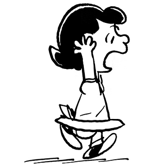

Chalie
Good ol’ Charlie Brown is loyal, determined, and just a bit wishy-washy. He’s a true friend, a dedicated baseball manager, and very responsible when it comes to taking care of his dog, Snoopy. Charlie Brown never gives up, even when he probably should. He is kind and patient by nature, and wears his heart on his sleeve. He likes helping others, but try as he might, he just can’t seem to help himself.

Snoopy
Snoopy is not your average beagle. He is a book lover and a book writer. He is a collector of fine art and a root beer connoisseur. Plus, his unstoppable imagination helps keep his life anything but ordinary.

Woodstock
Woodstock is not a great flyer. In fact, he doesn’t even know what type of bird he is. The only thing he knows for sure is that he and Snoopy were destined to be great pals. He refers to Snoopy as his friend of friends, the only one in the neighborhood who understands his chirps. Woodstock is always up for an adventure, but is just as happy relaxing at home.

Lucy
Though she’s often dismissed as simply bossy or crabby, there’s more to Lucy than strong opinions. She dispenses sound advice for just five cents and looks out for her brothers, Linus and Rerun. She’s confident, strong, and positive she’ll make a great president or queen one day. Her biggest weakness is her unrequited love for Schroeder… *sigh*. Never fall in love with a musician.